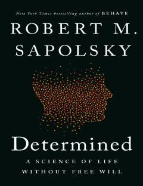

DAInson xulq-atvori va iroda erkinligi haqidagi ilmiy tadqiqot.
Robert Sapolsky inson xulq-atvori va iroda erkinligi masalalarini biologik nuqtai nazardan tahlil qiladi. Muallif bizning qarorlarimiz biologik, genetik va atrof-muhit omillari tomonidan oldindan belgilanganligini ilmiy dalillar bilan asoslab beradi.